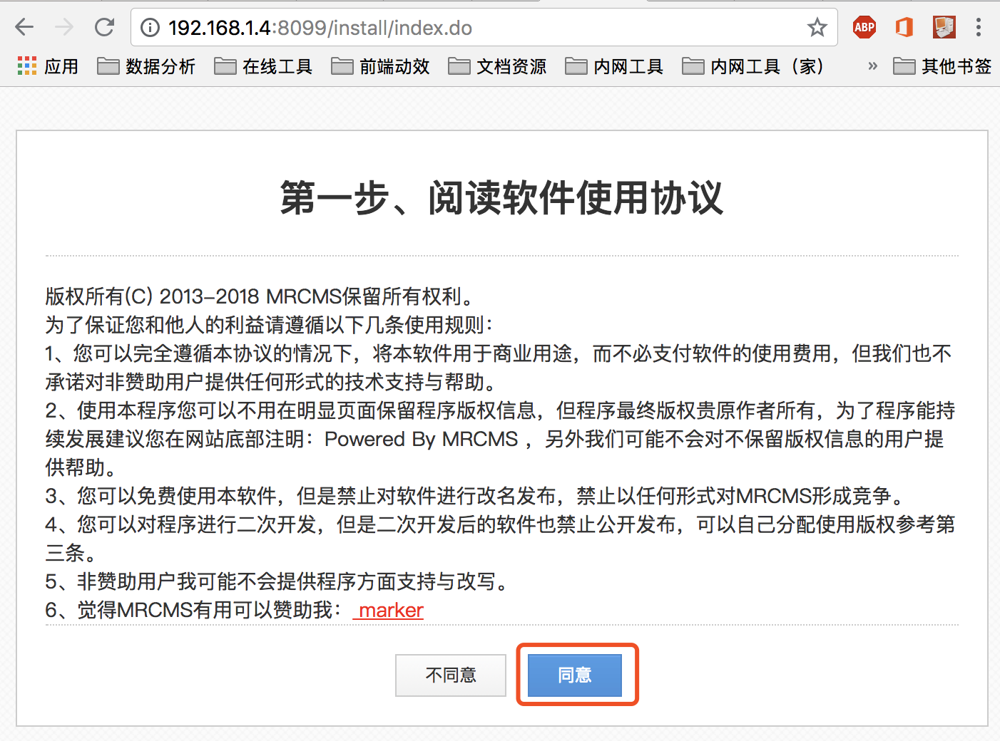
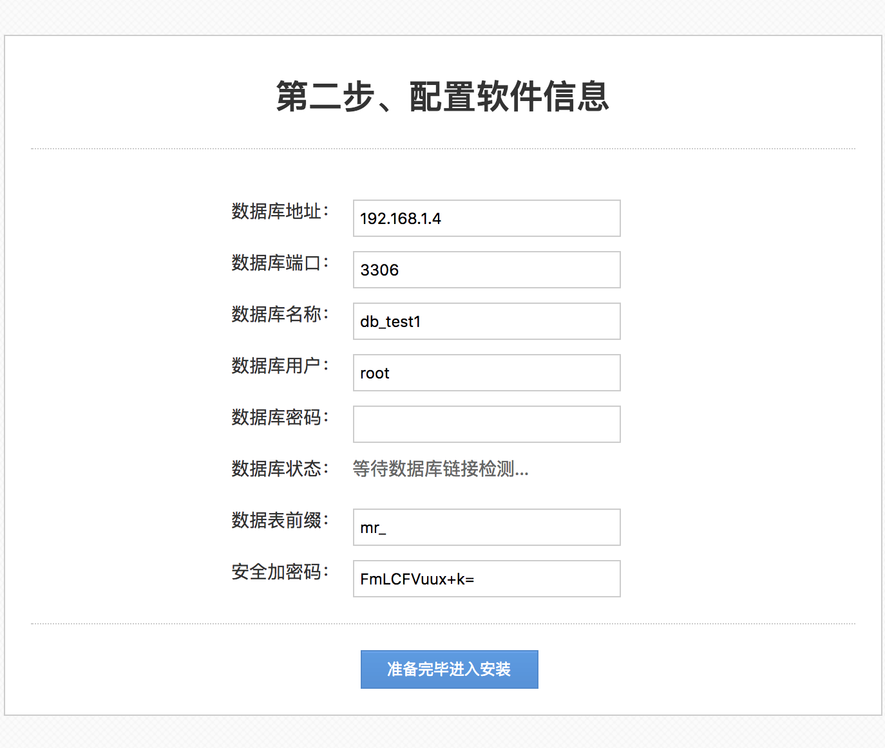
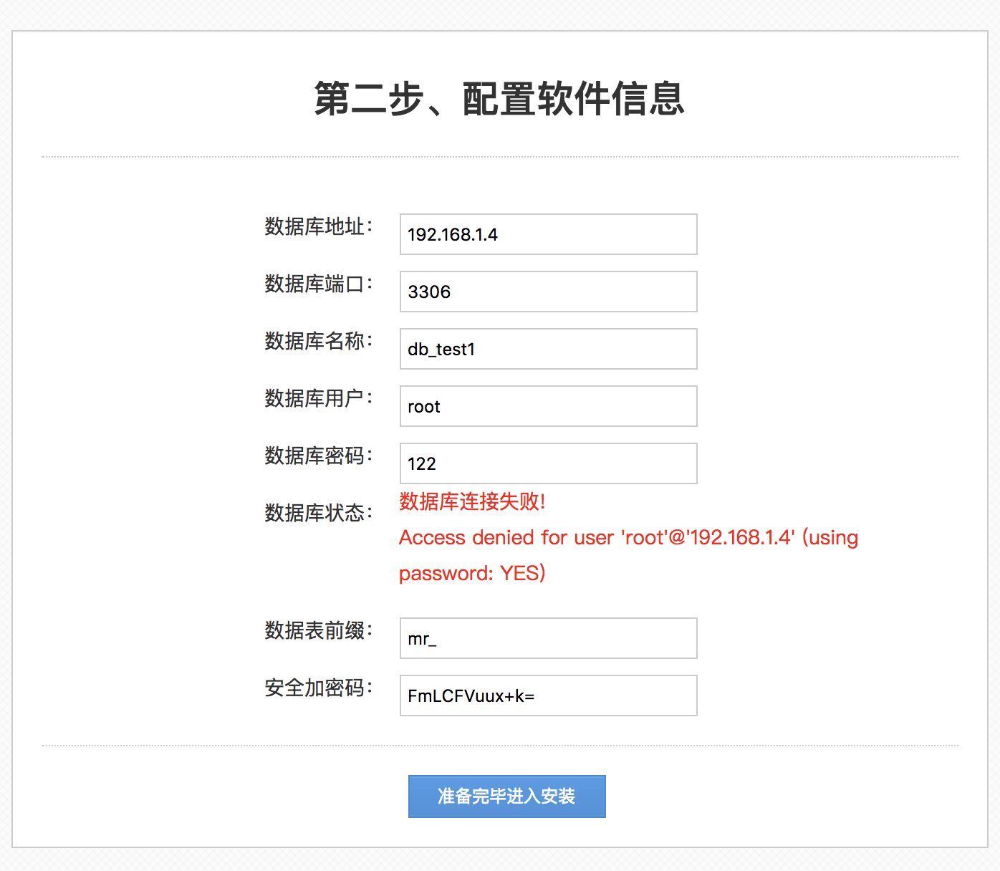
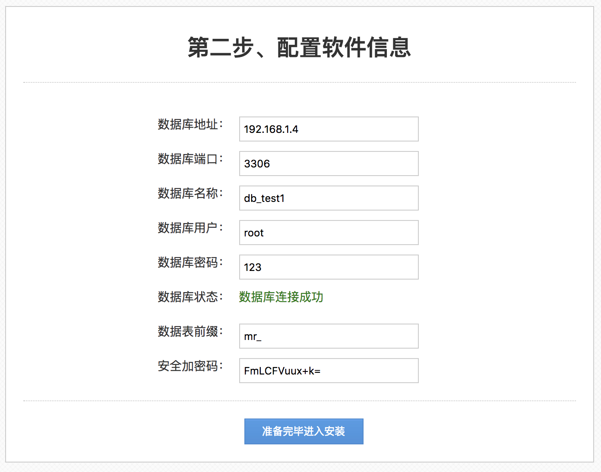
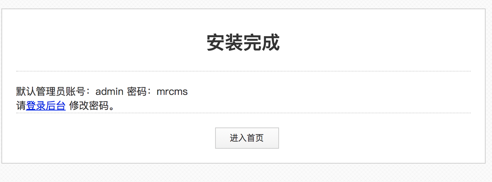
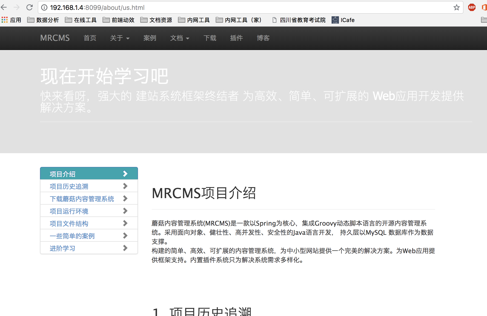

MRCMS 安装操作
提前准备好mysql数据库，可以快速安装哈。不会部署mysql自行百度。
 请仔细看使用协议，然后点击【同意】按钮，进入到数据库配置界面  数据库配置界面需要连接数据库，当修改数据库相关的配置信息时，系统会自动尝试连接数据库，如果参数填写错误，会有响应的提示信息。  如果您配置的数据库是不存在的，账号权限够大的情况系统会自动创建数据库的。
数据库配置正确后，可正常进入安装界面，点击【准备完毕进入安装】按钮。  注意：这里的安全加密码，是加密使用的盐房子md5被盗用的，每套MRCMS部署都是单独的盐值，保证独立安全。
安装完成后界面，默认初始化了账号和密码。 
成功进入首页 
注意：首页的国际化数据没有在demo模板里，因此看到很多空白情况是正常的。
恭喜您部署成功
但是小编告诉你，mvn部署方式只是快速体验，不要用于生产环境，谢谢您的支持。